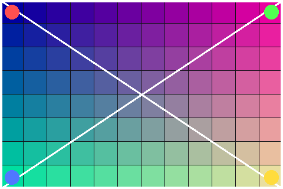

Every letter can move.
This is a real DOM — selectable, accessible, laid out by the browser — then mirrored onto the GPU and painted with the Slug algorithm.
Text decoration lines
A plain underlined jumpy gap, and an underlined link with bold gypsy jog text inside — the underline propagates into the nested element.
Struck-through text ·
Overline span ·
Custom pink underline
Hard text shadow
Glowing text, blurred
Two offset shadows
Fallback atlas, soft shadow
Ligatures
fi fl ffi ffl office waffle affluent
fi fl ffi ffl office waffle affluent
fi fl ffi ffl office waffle affluent
uppercase text · LOWERCASE Text · capitalize each word-here (ok)
straße · istanbul iğne · istanbul iğne
office fifty +4px
office fifty -1px
office fifty 0px
TRACKED BOLD
rtl spaced
Emoji & fallback glyphs
Ship it 🚀 — 👩🚀 flags 🇦🇺, kanji 漢字, math ∑∫, arrows → ←
No registered face here, so the whole run is drawn by the browser.
Boxes track layout
Fill under borders
Box shadows
Images mirror too


Gradients & backgrounds
Gradients and background images render in the GPU layer; compare against the DOM with GPU-only toggle.
Overflow clips
Stacking order
Text sits under the badge but over the tinted plate…
Badge (z-index: 5) should paint over text; plate (z-index: -1) behind text; opacity 0.4 ghost and children paint opaque but dimmed.
Fixed positioning
The page scrolls underneath while fixed elements stay attached to the viewport.
Fixed records are stored in viewport space and skip the scroll offset in the vertex shader.
Document-space records keep scrolling with a single uniform write and no re-read.
Batches never merge a viewport record past a document record: their overlap changes with scroll.
An opacity group holding viewport records resolves its bounds at the current scroll.
Ancestor overflow clips do not apply across the fixed boundary.
The page scrolls underneath while fixed elements stay attached to the viewport.
Fixed records are stored in viewport space and skip the scroll offset in the vertex shader.
Document-space records keep scrolling with a single uniform write and no re-read.
Batches never merge a viewport record past a document record: their overlap changes with scroll.
An opacity group holding viewport records resolves its bounds at the current scroll.
Ancestor overflow clips do not apply across the fixed boundary.
The page scrolls underneath while fixed elements stay attached to the viewport.
Fixed records are stored in viewport space and skip the scroll offset in the vertex shader.
Document-space records keep scrolling with a single uniform write and no re-read.
Batches never merge a viewport record past a document record: their overlap changes with scroll.
An opacity group holding viewport records resolves its bounds at the current scroll.
Ancestor overflow clips do not apply across the fixed boundary.
The page scrolls underneath while fixed elements stay attached to the viewport.
Fixed records are stored in viewport space and skip the scroll offset in the vertex shader.
Document-space records keep scrolling with a single uniform write and no re-read.
Batches never merge a viewport record past a document record: their overlap changes with scroll.
An opacity group holding viewport records resolves its bounds at the current scroll.
Ancestor overflow clips do not apply across the fixed boundary.
The amber pill (top-right) and blue card (bottom-left) stay put while the page scrolls.
Sticky positioning
Sticky heading (top: 0)
Document-space records keep scrolling with a single uniform write and no re-read.
Batches never merge a viewport record past a document record: their overlap changes with scroll.
An opacity group holding viewport records resolves its bounds at the current scroll.
Ancestor overflow clips do not apply across the fixed boundary.
The page scrolls underneath while fixed elements stay attached to the viewport.
Fixed records are stored in viewport space and skip the scroll offset in the vertex shader.
Document-space records keep scrolling with a single uniform write and no re-read.
Opacity groups
Each opacity < 1 element is flattened and faded once: no background bleeds through its text or children.
Transforms
Rotate, scale, skew and nested transforms draw as transformed quads; CSS animations are re-read every frame while they run.
Mutations re-read only their subtree
Text: Hello World
- First item
- Second item
Watch the read stat — the first two stay small, the third jumps to the full element count.
Pseudo-elements
- Disc bullet one
- Disc bullet two
- Disc bullet three
- Third
- Fourth
- Fifth
- Custom marker
- Pink arrow
made for iPhone Duo
Timepage on iPhone Duo — DUO BOLD